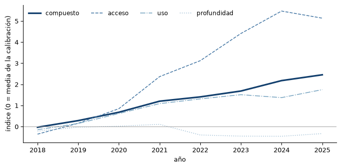

| dimension | metodo | n_variables | kmo | varianza_explicada | |
|---|---|---|---|---|---|
| 0 | acceso | variable_unica | 1 | NaN | NaN |
| 1 | uso | pesos_iguales | 4 | 0.314 | NaN |
| 2 | profundidad | pesos_iguales | 3 | 0.404 | NaN |
El índice de inclusión financiera
Ocho variables, tres dimensiones, pesos congelados y publicados
El índice resume en un número la intensidad de la inclusión financiera de un departamento o municipio en un año. Está construido para que ese número signifique lo que dice: no el tamaño de la unidad, no una escala que cambia cada vez que se añade un año, y sin ninguna variable entrando con el signo contrario al que le corresponde. Las decisiones y su motivo están en ADR-015.
Qué entra y por qué
Ocho variables, una por concepto, todas presentes en las dos tablas de la Superintendencia para que la serie no se rompa en 2021.
| Dimensión | Variable | Unidad | Naturaleza | Normalización |
|---|---|---|---|---|
| acceso | NRO CORRESPONSALES ACTIVOS | count | stock | por 10.000 habitantes |
| uso | NRO TOTAL | count | flujo | por 10.000 habitantes |
| uso | MONTO TOTAL | cop | flujo | % del producto |
| uso | NRO TOTAL CTA AHORROS | count | stock | por 10.000 habitantes |
| uso | SALDO TOTAL CTA AHORROS | cop | stock | % del producto |
| profundidad | MONTO TOTAL CREDITO CONSUMO | cop | stock | % del producto |
| profundidad | MONTO TOTAL CREDITO VIVIENDA | cop | stock | % del producto |
| profundidad | MONTO TOTAL MICROCREDITO | cop | stock | % del producto |
Las variables crudas no sirven: su correlación con la población va de 0,58 a 0,94, así que un índice sobre ellas mediría tamaño. Después de normalizar, esa correlación cae a un rango de −0,28 a 0,69.
Lo que queda fuera, con su motivo, está en config/index.yaml: el crédito de bajo monto por cobertura insuficiente, los componentes de las transacciones porque su total ya entra, los cortes por género y por rango porque son desagregaciones del mismo total, y las cuentas electrónicas y los corresponsales móviles porque solo existen en una de las dos tablas.
Cómo se combinan
Dentro de cada dimensión las variables pesan igual sobre sus valores estandarizados. El compuesto promedia las tres dimensiones con el mismo peso.
El plan era un componente principal por dimensión. Al medirlo se descartó, y la medición se publica:
Un KMO por debajo de 0,5 significa que las variables no comparten suficiente varianza común para que un componente principal las resuma. Forzarlo daba peso negativo al microcrédito y al monto de transacciones: el mismo defecto que la auditoría había encontrado en el índice del trabajo de grado. El componente principal se conserva como sensibilidad, no como método.
Los pesos, a la vista
Cuánto pesa cada variable en el compuesto. En la escala estandarizada suman uno; en la escala original dicen cuánto mueve el índice un cambio de una unidad de la variable tal como se mide.
| dimension | variable_id | peso_estandarizado | peso_escala_original | desviacion_calibracion | |
|---|---|---|---|---|---|
| 0 | acceso | nro_corresp_activos | 0.3333 | 0.0368 | 9.0581 |
| 1 | profundidad | monto_total_cred_consumo | 0.1111 | 0.1008 | 1.1025 |
| 2 | profundidad | monto_total_cred_vivienda | 0.1111 | 0.4769 | 0.2330 |
| 3 | profundidad | monto_total_micro | 0.1111 | 0.4788 | 0.2320 |
| 4 | uso | monto_total | 0.0833 | 0.0109 | 7.6187 |
| 5 | uso | nro_total | 0.0833 | 0.0000 | 29702.3259 |
| 6 | uso | nro_total_cta_ahorros | 0.0833 | 0.0000 | 4820.5240 |
| 7 | uso | saldo_total_cta_ahorros | 0.0833 | 0.0106 | 7.8711 |
Ninguno es negativo. Esa es la comprobación que decidió el método y la que vigila una prueba automática.
Sensibilidad
Tres versiones del mismo índice: la publicada, la del componente principal y la de distancia de Sarma. Correlación de rangos entre ellas:
| iif_compuesto | iif_pca | iif_sarma | |
|---|---|---|---|
| iif_compuesto | 1.000 | 0.960 | 0.883 |
| iif_pca | 0.960 | 1.000 | 0.834 |
| iif_sarma | 0.883 | 0.834 | 1.000 |
Las tres ordenan a los departamentos casi igual. Por eso conviene quedarse con la que no tiene pesos negativos: se pierde poco y se gana una propiedad que sí importa.
Pesos congelados
Media, desviación y cargas se estiman una sola vez, en la ventana de calibración, y se guardan en config/index.yaml. A partir de ahí el índice se reproduce exactamente y añadir un año nuevo no cambia el valor de los años anteriores. Recalibrar es una decisión explícita: uv run iif index --recalibrar, que reescribe el archivo y queda registrado en git.
Los mismos pesos se aplican al nivel municipal, calibrados en el departamental, para que el índice de un municipio y el de su departamento estén en la misma escala.
Cómo se ve

El acceso es el que más se mueve: los corresponsales físicos por habitante se multiplicaron en el periodo. La profundidad, que mide crédito sobre producto, apenas cambia. El compuesto queda entre los dos.
Lo que el índice no dice
Es una medida de intensidad relativa, no de bienestar ni de acceso efectivo de las personas. Mide lo que las entidades vigiladas reportan por municipio: un municipio sin fila no es un municipio con cero, es un municipio no observado. La dimensión de acceso descansa en una sola variable porque la fuente no ofrece otra medida continua en todo el periodo; los puntos de atención (oficinas, cajeros, datáfonos) empiezan en 2023 y entrarán cuando el panel corto tenga sentido.